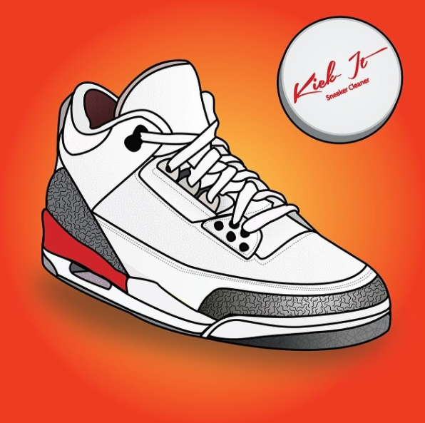

Sneakers Cleaner
We give you the ability to keep your sneakers clean at all times. The sneakers make the man and the man needs clean sneakers. As people we make snap judgments of other people when we first meet them and 90% of that judgment comes when they look down at your sneakers, so it’s best to keep them clean at all times.
$120
Buy Now
Kick It Clean
It is the only product on the market that is in a solid form and allows you the ability to drop it in your back pocket and clean your sneakers anywhere. Another factor that sets us apart from other cleaners on the market is that when you are cleaning leather, plastic and rubber it requires no water. We are in the process of looking for a water charity to partner up with. Our goal is to donate a bottle of water for every container of Kick-It we sell.
Our client base cares about their appearance, they are cognizant that the outside is always looking down and they want to make sure that when people are looking at their sneaker they are clean. They care what other people think (no matter what they say) and they love when people compliment on how clean their sneakers are. Nothing makes a sneaker lover happier than when someone says “Damn, that’s some heat you are rocking.”
Product Details
Waterless Cleaner
Reviews

Why Kick-It Sneaker Cleaner?
TWOTF: What’s the history behind Kick-It? How did it come about?
Brent: I was living in Shenzhen, China at the time and when you live in a city it’s always hard to keep your sneakers clean. I started looking for an effective but quick cleaner and something that I could carry in my satchel. I couldn’t find what I was looking for so I did the next best thing and created one. I contacted a few companies that were making something similar to what I had in mind and created what we are using today, an Eco-friendly aesthetically appealing sneaker cleaner.
Product History?
TWOTF: Tell us about the process of actually working out what needed to be in the product and the manufacturing process.
Brent: We wanted to make sure that the cleaner was healthy for the skin and would not cause dryness in the fingers after using it. We tapped into a great natural resource that is a great moisturizer for the skin and also assists in conditioning the leather of a sneaker, coconut oil. After that we had to come up with an ultra portable container. We spent a weeks contemplating what would be the most effective at achieving this goal. Then one day while walking down the street in Shenzhen my wife asked what my friend had in his pocket. He pulled out a tin of Skoal and then Bam, it hit me. People are familiar with that container, it’s extremely portable and offers an area to hold a small cleaning device to allow you to do quick touch up on the move. Next came the name, we wanted it to resonate with the sneaker community so we started to brain storm words often used in the community. I landed on Krispy Klean and was ready to design the font when my brother called me and said “Kick-It.” That was it, it was perfect, simple, clean and carries a lot of weight in the sneaker community.
Why Do We Need Kick-It?
TWOTF: Why do I need it – what’s it gonna do for my kicks?
Brent: You need it because you don’t want to be the last on the streets without it. Clean and condition quickly while on the move.